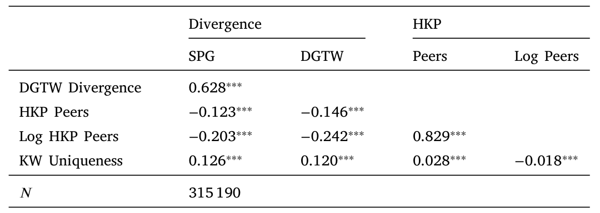
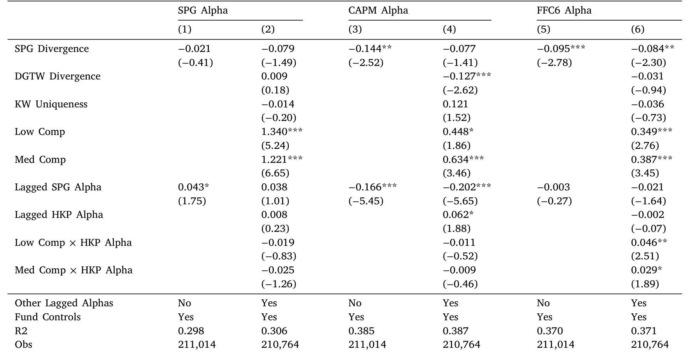
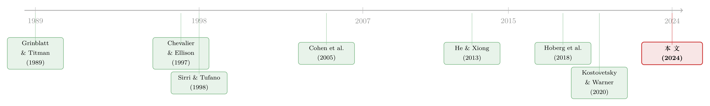

食言的代价：当一只基金，没能守住它在招股书里许下的承诺
本文读的是 Abis & Lines (2024, Journal of Financial Economics)：作者用机器学习把基金招股书里的「主要投资策略」文本聚成 17 个「策略同侪组」，证明投资者不仅看业绩和费率，还在乎基金有没有守住自己许下的策略承诺——一旦基金偏离同组平均持仓，资金就会流出；但若它靠偏离跑赢了同组对手，资金又会流入。守诺与跑赢之间，存在一个微妙的两难。
1 一个没人来执行的承诺
每一只主动股票基金，在它的招股书（prospectus）里都写着一段话，叫做「主要投资策略（Principal Investment Strategy, PIS）」。证监会要求基金在这里「用通俗的语言解释基金顾问如何决定买卖哪些证券」。于是有的基金说自己专挑高股息股票，有的说自己信奉长期价值，有的说自己用量化模型选股。
问题是：谁来保证它说到做到？
法律上，重大策略变更确实要上报 SEC 和投资者；但真要较真，一只「长期价值」基金某个季度多买了几只成长股，算不算「食言」？这种偏离细微、模糊、难以举证，监管几乎无从下手。于是一个很自然的怀疑冒出来：招股书里那段话，会不会只是一纸营销辞令（marketing artifact）——写得天花乱坠，做起来另说？
这篇论文最初的标题，干脆就直白地问了一句：「Do Mutual Funds Keep Their Promises?」（共同基金会守住它们的承诺吗？）。而它最终的答案是：会——不是因为法律逼着它们守，而是因为投资者在用脚投票，亲手执行了这份没人执行的合同。
要把这个故事讲清楚，作者得先解决一个看似不可能的任务：怎么把「一句承诺」变成一个可以测量的变量。
2 把「承诺」聚成 17 个策略
首先，是数据。作者从 SEC 的 EDGAR 系统抓取了 2000–2017 年的招股书，专门挑出每只基金的 PIS 段落（对应 N-1A 表格的 Item 9(c)）。之所以从 2000 年开始，是因为这一年 SEC 开始接受 HTML 格式的标准化披露，在此之前文本杂乱、覆盖稀疏，没法做可靠的文本分析。最终样本覆盖 2,995 只基金、315,190 个基金–月观测，匹配上了 31,695 份 PIS 描述。
接着，一个自然的问题是：怎么从这些自由发挥的文字里「读」出策略？作者没有事先规定哪些词重要，而是用了无监督机器学习里最朴素的一招——k-均值（k-means）聚类。具体做法是先用「词袋（bag of words）」把每份文本编码成一个词频–逆文档频率（tf-idf）向量，然后在所有文档张成的向量空间里随机撒下 \(k\) 个质心，把每份文档分配给欧氏距离最近的质心，再把质心更新为分配给它的所有文档的均值向量，如此迭代直到收敛。两个文档的距离写出来就是：
$$ \sqrt{\sum_{r=1}^{R} \lVert x_r - x^{C}_r \rVert^2} $$
这里 \(x_r\) 是某份文档在第 \(r\) 个特征上的 tf-idf 值，\(x^{C}_r\) 是质心在该特征上的对应值，\(R\) 是特征总数。聚类数 \(k\) 怎么定？作者在 \(k\in[10,20]\) 之间逐一尝试，用两条自创标准——「密度（density）」要求新切出来的类在语言上足够独特，「稳定性（stability）」要求大多数基金在相邻的 \(k\) 下被分进同一组——最终敲定了 17 个策略。
这 17 个策略同侪组（Strategy Peer Group, SPG），有些是学界耳熟能详的（大盘、中盘、小盘），但大多数超出了传统风格的范畴：有按公司特征划分的（股息、新产品与服务、竞争优势、市盈率），有按投资哲学划分的（量化、基本面、内在价值、长期、防御、税务），还有按次要资产类别和国际市场划分的。换句话说，基金对自己策略的自我描述，远比「规模/价值/动量」这三把老尺子要细腻得多。

Table 3: shows the correlation among SPG-divergence
然后，真正要害的一问来了：这 17 个组，到底是实打实的产品差异，还是只是话术上的包装？
3 文字背后，是真不一样
作者从两头夹击这个问题。
一头看持仓。不同 SPG 的基金，持仓特征显著不同，而且方向和它们的承诺高度吻合：「股息」组的基金持有股息率最高、现金和资本开支最低的股票；「长期」组则偏好账面市值比更低、无形资产更高、股息率更低的股票。这不是巧合，文字确实对应着行为。
另一头看业绩。这里出现了第一个意味深长的细节：不同 SPG 之间，原始收益、持仓、策略特征都有显著差异，唯独风险调整后业绩（risk-adjusted performance）没有系统性差异。这说明产品差异化并不是发生在「谁的 alpha 更高」这个维度上，而是发生在风险暴露和那些没有被定价（non-priced）的特征上。基金不是在比谁更能赚钱，而是在比谁更「不一样」。
为了把「守诺」变成一个连续变量，作者构造了一个策略偏离度（strategy divergence）的度量。它的逻辑很干净：如果一组基金都老实地执行各自承诺，那么这组基金持仓的平均权重向量，就代表了这个 SPG 的「核心策略」；任何一只基金离这个平均越远，就越「食言」。形式上，偏离度是该基金持仓权重向量与同组平均权重向量之间离差平方和的对数：
$$ \text{Divergence}_{i,t} = \log\!\left( \sum_{j} \left( w_{i,j,t} - \bar{w}_{\,\text{SPG},\,j,t} \right)^2 \right) $$
其中 \(w_{i,j,t}\) 是基金 \(i\) 在第 \(j\) 只股票上的持仓权重，\(\bar{w}\) 是同 SPG 所有基金的平均权重；取对数是为了让这个变量近似正态。
这个度量背后藏着一个简化假设：每个组内基金对核心策略的偏离都是纯粹特异（idiosyncratic）的。只有这个条件成立，组内平均才能代表「核心策略」。作者用一个安慰剂检验给它撑腰：如果基金真在执行自己的承诺，它离自己组的平均，应该比离别的组的平均更近。结果正是如此——基金持仓与自己 SPG 平均的相似度，比安慰剂高出 9% 到 46%（取决于控制变量），而且这一结论在控制了 HKP（Hoberg et al., 2018）和 KW（Kostovetsky & Warner, 2020）这两个既有的竞争/差异化指标后依然成立，说明 SPG 抓到的是一个全新的产品差异维度。
至此，「承诺」被量化了，「守诺」也被量化了。下一步顺理成章：投资者，到底在不在乎？
4 投资者真的在「执行合同」
要看投资者在乎什么，就看资金流（fund flows）往哪儿走。
作者先构造了一个 SPG 调整后收益：把同一文本组里所有基金的平均收益减掉，剩下的就是这只基金相对它「直接对手」的超额表现。结果发现，这个新业绩指标正向且显著地预测未来资金流——即使控制了一大堆传统业绩指标（CAPM alpha、Fama–French–Carhart 四因子、五因子加动量、HKP 定制同侪 alpha，以及 DGTW 特征选择度）之后，资金流对 SPG 调整后业绩的敏感度，仍有对 CAPM alpha 敏感度的 43% 之大。投资者显然知道 SPG 的边界存在，并且把同组基金看作彼此的（不完美）替代品。
但更关键的一步在于：投资者不只奖励「跑赢同组」，还惩罚「偏离承诺」本身。在策略偏离度更高的月份之后，资金流（占总净资产的百分比）显著更低——而且这个结果在控制了业绩以及 KW、HKP 两个替代差异化指标之后依旧稳健。也就是说，哪怕你业绩没掉，只要你「变了」，投资者也会用赎回来表达不满。
这就是投资者在亲手执行那份合同：守诺有奖，食言有罚。
（关于资金流如何反过来塑造资本配置、甚至「拧歪」它，可参见《钱追着「人气」跑：投资者需求如何悄悄拧歪了资本配置》；关于如何从资金流里反推投资者的偏好，也可参见《用真金白银投出来的前景理论：从基金资金流里「反推」投资者偏好》。）
不过，一个怀疑论者会立刻反问：偏离和资金流之间，真的是因果吗？
5 真正关键的一步：用「行业意外」当工具
这正是全文最见功力的地方。
偏离度不是随机的。一只基金主动偏离，往往是因为它预见到了 alpha 机会，或者感到了来自同行的竞争压力——而这些未观测的因素，可能同时影响资金流，造成遗漏变量偏误（omitted variable bias）。换句话说，OLS 里偏离与资金流的负相关，可能只是「基金在乱搞 → 投资者跑路」这条因果，也可能掺杂着别的东西。
作者先用一个结构面板向量自回归（structural panel VAR, SPVAR）模型来刻画动态：通过 Cholesky 分解（Sims, 1980）识别正交化的偏离冲击，变量排序依据「慢速移动资本（slow-moving capital）」的论证（Duffie, 2010）。这个框架告诉我们，一次单月、一个标准差的偏离冲击，会导致投资者持续流出超过 12 个月，累计的年度百分比资金流减少相当于年样本均值的 15%。
但 SPVAR 排除的是反向因果，遗漏变量的隐忧还在。于是真正的杀手锏登场——一个巧妙的工具变量（instrumental variables, IV）。
它的思路是：找到一种会机械地把基金推离核心策略、却与基金本身属性或宏观事件无关的力量。作者找到的是特异性行业冲击（idiosyncratic industry shocks）。具体做法是，把 Fama–French 10 个行业组合的收益分别对一个完整的因子模型（Fama–French–Carhart 六因子）回归，取残差的绝对值作为工具变量。直觉是：某个行业出现一次巨大的、特异的收益波动（无论涨跌），会机械地改变持有该行业股票的基金的组合权重，从而让它被动地偏离核心策略——而由于个体组合和 SPG 平均受到的冲击程度不同，这种被动偏离就被「制造」了出来。
这个识别有几个让人安心的性质：
- 第一阶段强：绝对特异行业收益与偏离度变化之间有强正相关，\(F\) 统计量大于
10。 - 像事件研究：由于工具本身是时间序列性质的，整个 IV 很像一次事件研究。而且「无预趋势（no pre-trends）」假设成立——被工具化的偏离在行业冲击之前对资金流没有任何影响。
- 时滞合理：基金在偏离冲击后约一个季度才开始流出，并持续至少四个季度，符合「投资者要先观察到冲击对组合的影响、再做反应」的直觉。
最终的 IV 估计：被工具化的偏离度变化每增加一个标准差，年度百分比资金流减少 0.6%，相当于年样本均值的 25%。作者很诚实地强调，这个量级受限于工具能制造的冲击大小，因此很可能是真实效应的一个下界（lower bound）。
而 IV 还给了一个 OLS 给不了的东西：它估的是纯粹非自愿偏离情形下的效应——剥离了那些基金「故意」偏离的情形。于是这个系数，反映的是投资者对「守诺」最纯粹的偏好。
于是反转出现了。
6 反转：偏离，有时反而是对的
如果偏离总是招来惩罚，那基金为什么还要偏离？
因为偏离并不总是「食言」，有时是「抓机会」。作者借用 HKP（Hoberg et al., 2018）的发现——DGTW 同侪更少的基金更能创造 alpha——构造了一个策略性偏离（strategic divergence）的情形：当一只基金通过偏离，从一个 DGTW 特征空间拥挤（HKP 同侪多）的区域，移动到一个稀疏（HKP 同侪少）的区域时，这种偏离更可能是出于战略考量。
结果非常漂亮：偏离度与业绩的关系，总体上是负的或不显著的；但一旦与「策略性偏离」的哑变量交互，系数就变得显著为正。在这些策略性情形里，把偏离度从经验分布的下四分位提到上四分位，能让基金跑赢它的 SPG 同侪 1.02%（相当于样本标准差的 56%；注意 SPG 调整后业绩的均值按构造为零）。

Table 7: reports the outcome of those regressions. Regardless of
到这里，整篇论文的核心张力才完全显形：
基金面对一个微妙的两难——投资者既奖励守诺（向核心策略靠拢），又奖励跑赢同组对手；而当一个 SPG 在经典风格空间（规模、价值、动量）里变得拥挤时，想跑赢同组，恰恰需要偏离核心策略。守诺与跑赢，被同一群投资者推向了相反的方向。
这就是标题里「broken promises, competition, and capital allocation」三个词的内在逻辑：承诺约束着基金，竞争诱惑着它偏离，而资本配置正是这场拉锯的均衡结果。
最后还有一个收尾的精彩之处。作者用 SPVAR 框架顺手分析了偏离度自身的动态：偏离度存在均值回复（mean reversion），无条件回复速度是每年 75%；而当基金遭遇一个标准差的资金流出时，这个回复速度还会再快 12.5%。换句话说，市场本身就是一台纪律机器——投资者用赎回，把那些偏离了承诺的基金硬生生「拉」回核心策略，哪怕法律根本没法强制执行。这呼应了 He & Xiong (2013) 关于投资授权与资本固着的洞见：约束基金的，未必是合同条款，而是退出的威胁。
7 文献脉络
把这篇论文放回它生长的土壤里看，会更清楚它的位置。
最早，基金风格是被「事先指定」的：Sharpe (1988, 1992) 用收益做风格分析，Grinblatt & Titman (1989)、Daniel et al. (1997, 即 DGTW)、Chan et al. (2002) 则用持仓来定义风格。这些方法都需要研究者预先知道哪些特征重要。本文的无监督文本方法，则是让数据自己「说」出风格。
与此同时，资金流–业绩这条线索蔚为大观：Chevalier & Ellison (1997)、Sirri & Tufano (1998) 奠定了流量对业绩敏感的事实，Barber et al. (2016)、Berk & van Binsbergen (2016) 进一步追问投资者到底在用哪个模型评判基金。而 Cohen et al. (2005)、Hoberg et al. (2018) 则强调，要把基金相对其直接对手来评价——这正是本文「SPG 调整后收益」的思想来源。
再往近看，是一批研究基金间竞争与差异化的论文：Wahal & Wang (2011) 看持仓相似度，Li & Qiu (2014) 看基金如何通过差异化因子暴露来减少竞争，Kostovetsky & Warner (2020) 第一次用招股书文本的独特性来度量产品差异化。本文站在这一脉的最前沿，但又往前推了一大步：它不只问文本「有多独特」，而是问文本具体说了什么，并证明这些内容对投资者确有意义。

评论与延伸（Q&A + 研究方向）
(a) 几个可能的疑问
Q：SPG 偏离度，和 HKP、KW 那些既有的「差异化/竞争」指标，到底有什么不同？
HKP 度量的是基金在规模/价值/动量暴露上的同侪相似度，KW 度量的是招股书文本的独特性。本文的不同在于两点：一是它捕捉的是基金相对自己承诺的偏离，而非泛泛的「与谁相似」；二是作者明确把 HKP 和 KW 作为控制变量放进回归，证明 SPG 偏离度在它们之外仍有增量解释力，相关性也很低——所以这是一个新维度，不是旧指标的改头换面。
Q：为什么不同 SPG 之间风险调整后业绩没有差异，这不奇怪吗？
恰恰相反，这正是「产品差异化」的题中之义。如果某个策略系统性地 alpha 更高，竞争会很快把它抹平。差异化发生在风险暴露和未被定价的特征上——投资者买的不是更高的 alpha，而是一种符合自己偏好的风险敞口或风格标签。这也解释了为什么投资者会为「守诺」本身付费。
Q：那个用「特异行业冲击」做的工具变量，排他性约束可信吗？
相对可信，但不是无懈可击。它的优点是：样本剔除了行业基金，多数基金对各行业有较均衡的暴露，因此某个行业的特异收益冲击会机械改变组合权重，却难说与基金质量或宏观状态相关；而且「无预趋势」检验通过了。隐忧在于，行业冲击可能通过业绩这条渠道独立影响资金流——作者用显式的业绩控制来堵这个口子，但读者仍需相信这些控制是充分的。
Q：IV 估计的 0.6%/年看起来不大，该怎么理解它的经济意义？
它是一个下界。工具只能制造由行业冲击驱动的那部分被动偏离，量级天然受限；但即便如此，它已相当于年均资金流的
25%。更重要的是 IV 的角色不是给出「典型效应」的大小，而是干净地识别出投资者对「非自愿食言」的纯粹厌恶——OLS 里那个被战略动机污染的系数做不到这一点。
Q：「市场纪律」的故事，会不会其实只是均值回复的统计假象？
作者的关键证据是条件均值回复：无条件回复速度 75%/年是基线，而一旦基金遭遇一个标准差的资金流出，回复速度再加快 12.5%。是「资金流出」这个事件本身加速了回归核心策略——这把单纯的统计均值回复，和「投资者用赎回施加纪律」区分开了。
Q：k-means 选了 17 个组，换个数字结论会变吗？
作者用「密度」和「稳定性」两条标准来定 \(k\)，并在附录里说明结果对聚类数不敏感；他们还把 k-means 推广到允许基金承诺任意策略组合的「定制化 SPG」，主要结论都成立。此外他们对比了 LDA 主题模型，结果类似——选 k-means 主要是因为「最小化到单一中心的距离」更契合「平均持仓即核心策略」这一解释。
(b) 几个可能的研究问题与提案
1. 把「守诺—竞争」的两难搬到公司债基金。
【经济故事】公司债基金同样在招股书里承诺信用质量、久期、行业敞口，但债券市场流动性差、持仓披露更稀疏，「偏离承诺」的成本和被发现的概率都不同于股票。投资者对债基食言的惩罚，会不会因为赎回会引发贱卖外部性而更敏感？ 【可行性】中。PIS 文本同样可从 EDGAR 取得，债基持仓可用 CRSP/Morningstar；难点在于构造债券层面的「核心策略」权重向量，以及找到债市版本的特异冲击工具（或可用评级跳变、行业利差冲击）。识别策略可平移本文 IV，doable 但工具的第一阶段强度需要验证。
2. 外资持有人会不会是更「宽容」的承诺执行者？
【经济故事】本文把所有投资者一视同仁，但不同客户对「守诺」的敏感度可能天差地别。外资或机构投资者监督成本高、信息相对滞后，可能对偏离反应更慢、更弱；若如此，外资占比高的基金会拥有更大的「策略性偏离」空间。 【可行性】中。需要基金层面的投资者构成数据（如份额类别、分销渠道，部分可从 N-SAR/N-CEN 推断），把本文的资金流回归按投资者类型拆分。识别上可沿用 IV，把流出敏感度作为被解释量按客户结构分组，doable，但投资者构成数据的颗粒度是瓶颈。
3. 食言的「方向」重要吗——偏向拥挤还是偏向稀疏？
【经济故事】本文已发现「移向稀疏空间」的策略性偏离能带来超额业绩，但尚未系统刻画偏离的方向性。一个自然的猜想是：偏向更稀疏、更难持有股票的偏离创造 alpha，偏向拥挤的偏离则纯属噪声甚至损害业绩。这能把「食言」进一步分解成「有信息的食言」与「无信息的食言」。 【可行性】高。所需数据本文已全部具备（持仓、SPG 平均、HKP 密度）。只需把偏离向量按「移向高/低密度空间」分解，重做业绩与资金流回归。识别可继续用行业冲击 IV 的方向性变体，doable。
4. 大语言模型能否取代 k-means，读出更细的承诺？
【经济故事】k-means + 词袋会丢掉语序和语义，把「我们规避高估值股票」和「我们偏好高估值股票」当成近义。用 LLM 嵌入重做 SPG，可能识别出更精细、甚至此前被合并的策略，从而检验本文结论对文本表示方法的稳健性。 【可行性】高。EDGAR 文本公开，LLM 嵌入成熟。难点不在技术而在解释：LLM 簇不如 k-means 质心那样能直接对应「平均持仓即核心策略」，需要重新论证偏离度量的可解释性，doable 但要小心过度拟合文本噪声。
参考文献
- Abis, S. (2022). Man vs. Machine: Quantitative and Discretionary Equity Management. Working paper.
- Abis, S., Buffa, A.M., Javadekar, A., Lines, A. (2022). Learning from Prospectuses. Working paper.
- Barber, B.M., Huang, X., Odean, T. (2016). Which Factors Matter to Investors? Evidence from Mutual Fund Flows. Review of Financial Studies 29(10), 2600–2642.
- Berk, J.B., van Binsbergen, J.H. (2016). Assessing Asset Pricing Models Using Revealed Preference. Journal of Financial Economics 119(1), 1–23.
- Chan, L.K., Chen, H.L., Lakonishok, J. (2002). On Mutual Fund Investment Styles. Review of Financial Studies 15(5), 1407–1437.
- Chevalier, J., Ellison, G. (1997). Risk Taking by Mutual Funds as a Response to Incentives. Journal of Political Economy 105(6), 1167–1200.
- Cohen, R.B., Coval, J.D., Pástor, L. (2005). Judging Fund Managers by the Company They Keep. Journal of Finance 60(3), 1057–1096.
- Daniel, K., Grinblatt, M., Titman, S., Wermers, R. (1997). Measuring Mutual Fund Performance with Characteristic-Based Benchmarks. Journal of Finance 52(3), 1035–1058.
- Duffie, D. (2010). Presidential Address: Asset Price Dynamics with Slow-Moving Capital. Journal of Finance 65(4), 1237–1267.
- Grinblatt, M., Titman, S. (1989). Mutual Fund Performance: An Analysis of Quarterly Portfolio Holdings. Journal of Business 62(3), 393–416.
- He, Z., Xiong, W. (2013). Delegated Asset Management, Investment Mandates, and Capital Immobility. Journal of Financial Economics 107(2), 239–258.
- Hoberg, G., Kumar, N., Prabhala, N. (2018). Mutual Fund Competition, Managerial Skill, and Alpha Persistence. Review of Financial Studies 31(5), 1896–1929.
- Kostovetsky, L., Warner, J.B. (2020). Measuring Innovation and Product Differentiation: Evidence from Mutual Funds. Journal of Finance 75(2), 779–823.
- Li, S., Qiu, J. (2014). Financial Product Differentiation over the State Space in the Mutual Fund Industry. Management Science 60(2), 508–520.
- Sensoy, B.A. (2009). Performance Evaluation and Self-Designated Benchmark Indexes in the Mutual Fund Industry. Journal of Financial Economics 92(1), 25–39.
- Sharpe, W.F. (1992). Asset Allocation: Management Style and Performance Measurement. Journal of Portfolio Management 18(2), 7–19.
- Sims, C.A. (1980). Macroeconomics and Reality. Econometrica 48(1), 1–48.
- Sirri, E.R., Tufano, P. (1998). Costly Search and Mutual Fund Flows. Journal of Finance 53(5), 1589–1622.
- Wahal, S., Wang, A.Y. (2011). Competition Among Mutual Funds. Journal of Financial Economics 99(1), 40–59.